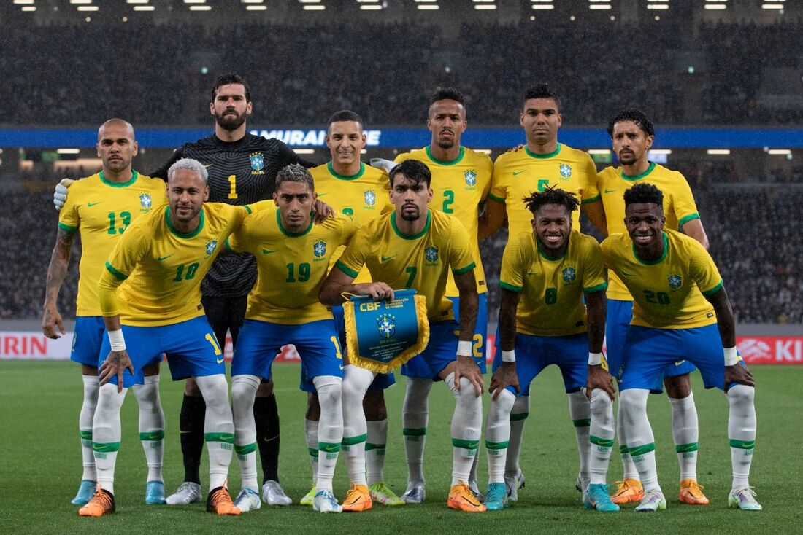
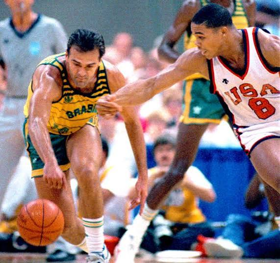

Futebol
A Seleção Brasileira é a maior campeã da história das Copas do Mundo, com cinco títulos (1958, 1962, 1970, 1994 e 2002), marcando gerações com grandes craques e momentos históricos no futebol mundial

Vôlei Feminino
A Geração de Ouro do vôlei feminino brasileiro conquistou dois ouros olímpicos (2008 e 2012), mas o esporte ainda luta por mais investimento e visibilidade.

Basquete
A Seleção Brasileira de basquete viveu um dos momentos mais marcantes de sua história nos Jogos Pan-Americanos de 1987, em Indianápolis. Liderado por Oscar Schmidt, o Brasil enfrentou os Estados Unidos na final e conquistou a medalha de ouro após uma virada histórica. Oscar foi o grande destaque da partida, mostrando sua capacidade de pontuar e liderar a equipe. A vitória por 120 a 115 ficou marcada como uma das maiores conquistas do basquete brasileiro.